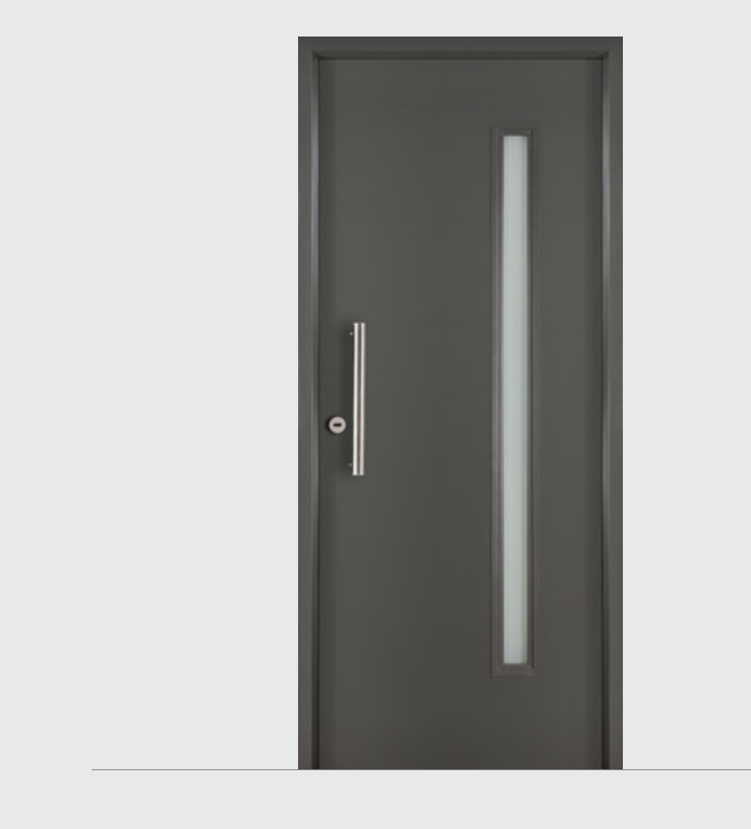

LINEA TEKNA

Las puertas pivotantes incorporan el acero prepintado en terminaciones Cedro, Roble y Negro Embozado.
Estas puertas se destacan por su versatilidad de estilos, su diseño moderno y porque son libres de
mantenimiento.
TEKNA OBLAK expande sus límites
LINEA ETERNA

A la tecnología y prestaciones de siempre,
sumamos un color contemporáneo a la
paleta Eterna, las nuevas puertas en
color GRAFITO.
Innovación y tecnología en para la puerta
libre de mantenimiento y lista para usar.
LINEA INNOVA

Un línea contemporánea, libre de
mantenimiento y lista para usar, con
barral de acero inoxidable rectangular,
nuevos modelos y el nuevo color
NEGRO.
LINEA PRIMMA PLUS

La Línea Primma Plus incorpora nuevos
diseños rectilíneos y minimalistas.
Con la misma calidad de siempre, las
puertas se fabrican con chapas de acero
electrocincado, resistente a la corrosión,
en terminaciones blanco y grafito.
MASTER GRANDIS

Línea de puertas de exterior de madera
maciza, fabricada con Eucaliptus Grandis,
cuyo proceso de laminado asegura
estabilidad y robustez.
PRESTA PLUS

La Línea Presta Plus, resistente a la
corrosión, incorpora un nuevo modelo
con cuatro buñas horizontales,
estampadas en ambas caras de la hoja,
en sus terminaciones Blanco y Grafito.
LINEA GEMA

Oblak completa su Línea GEMA con el nuevo
modelo LISO, una puerta de 45 mm de espesor,
de superficie lisa, con marco y contramarco regulable, todo revestido con un foliado melamínico,
liso blanco o texturado simil madera.
Nuevo modelo GEMA L, una puerta lisa con
un diseño limpio y minimalista.
LINEA TEKSTURA

Novedosa tonalidad y textura de melamina.
Simple contacto.
Contramarco regulable estándar. Burlete perimetral, mejora la aislación.
Alturas: 2,00 m y 2,20 m.
De abrir, de embutir, corredera externa, puerta y media (60+30).
Opcional Puerta Cortafuego (marco de madera o marco de acero).
Se entrega sin manija.
LINEA PANTOGRAFIADA

Clásico modelo liso, con contramarco regulable estándar en marco de madera.
Paneles de MDF de 9mm. Dos manos de base blanca.
Burlete perimetral.
Altura: 2,00m y 2,20m.
De abrir, embutir y puerta y media.
Opcional Puerta Cortafuego (marco de madera o marco de acero).
Se entrega sin manija.
LINEA MOLDEADA

Diseño tradicional de dos tableros moldeados, el superior curvo, que imitan la veta de la madera.
Hoja de HDF, simple contacto, es una puerta para pintar.
Marco de madera fabricado en pino finger joint, natural, sin base blanca. Marco de acero calibre BWG
Nº 24 y Marco de Aluminio fijo blanco de 7 cm.
De abrir, de embutir y corredera externa.
Se entrega sin manija.
LINEA ENCHAPADA

Clásica puerta de interior.
Enchapada en lámina de madera de cedro curupí. Para pintar o barnizar.
Simple contacto.
Burlete perimetral, aislación acústica.
De abrir y de embutir.
Opcional Puerta Cortafuego (sólo en marco de chapa).
Se entrega sin manija.
LINEA PRACTIKA

Puertas de interior con caras de MDF revestidas con un foil decorativo encolado por medio de un
adhesivo de última generación (PUR).
Listas para usar, libres de mantenimiento y fáciles de limpiar.
De abrir, de embutir, corredera externa.
Se entrega sin manija.